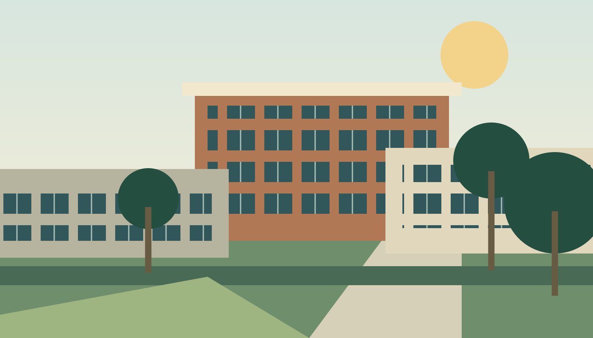

Admissions
A new beginning can start with one clear next step.
LET’S GET STARTED
Find your way in.
Choose the path that reflects where you are today.
All guidance on this site is a research sample.
New college students
Start with a program, gather your school records and prepare an application.
See the next steps →Returning & transfer students
Bring your previous experience into a new plan for learning.
Review your starting point →Career & continuing education
Explore shorter learning options and skills for your next move.
Explore credentials →Your first steps
Choose a direction
Explore the program catalog and consider a credential that matches your goals.
Prepare your information
Make a list of your prior education and questions for an admissions adviser.
Review your plan
Consider tuition, support options and how classes might fit your schedule.
Application demonstration
This local site does not accept applications or create student accounts. No application is submitted. Use the checklist above to explore a sample process.
Explore tuition information →Request information
The reference links to an external inquiry service. This research demonstration does not collect personal details. Browse the program information or prepare questions to discuss with a college adviser.
Read a sample program profile →
A look at campus
Original placeholder artwork stands in for the external virtual-tour experience. No live tour or visit registration is provided.